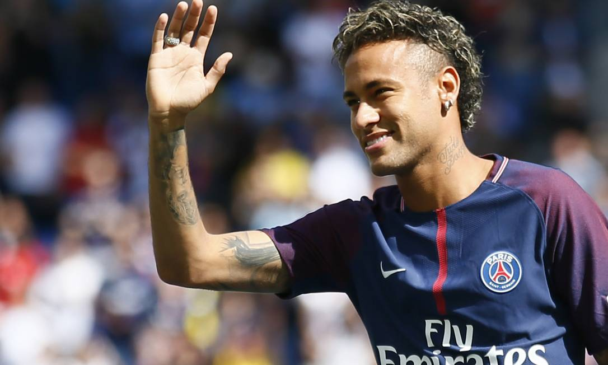

uma pagina de curiosidades sobre o Neymar, onde mostra a trajetoria dele e suas conquistas
o comeco de Neymar, no santos aonde ele era apenas uma promessa mas ainda assim, conquistou a libertadores e um puskas, Neymar se apresentava ao mundo como um fenomeno do futebol mundial , muitas pessoas dissiam que ele era o proximo pele, no caminho ao santos apareceram varias oportunidades ate mesmo pra ir pro real madrid (melhor time do mundo na epoca) Neymar encerra seu ciclo no santos com 1 copa da libertadores, 1 copa do brasil, 1 recopa sul americana e 3 campeonato paulista.
 E no dia 26 de maio de 2013 Neymar se juntou ao barcelona.
E no dia 26 de maio de 2013 Neymar se juntou ao barcelona.

o auge, onde o Neymar se torna a estrela e craque que ele e, onde conquistou varios titulos e conquistas, conquistando a competicao mais privelegiada do planeta (champions league) e marcando gol na final, foi no barcelona por mais que muitos achem que o auge tecnico dele foi no psg, onde ele conquistou mais titulos relevamtes foi no bacelona.
No barcelona o neymar chegou ao pico da carreira, faznedo um dos trios mais letais da historia, formado por Lionel Messi, Luis Suarez e Neymar Junior, o trio chhegou a ter 364 gols e 173 assistencia, com o Neymar sendo provavelmente a peca chave desse trio.
Neymar pelo barcelona foi um fenomeno total em todos os jornais do mundo quando tinha jogo so se falava de Neymar

pelo barcelona Neymar teve 123 jogos 86 gols e 59 assistencias, conquistou 1 liga dos campeoes, 1 mundial de clubes, 2 laligas, 3 copas do rei e 1 supercopa da espanha encerrando uma passagem brilhante pelo clube catalao

Neymar pelo psg chegou como uma estrela, Neymar foi a contratação mais cara da história do futebol, ele jogaria como pontapelo psg neymar diz que chegou ao seu auge tecnico porém sofreu com muitas lesões, principalmente no meio da temporada de 2018, porém pelo psg Neymar conquistou 6 campeonatos franceses, chegou na final de uma champions, neymar pelo psg foi um fenômeno inexplicavel mesmo não tendo conquistadoi a tão sonhada champions league,
em 2023 Neymar se transferiu pra o ahl hilal onde jogou apenas 8 jogos, e em 2025 ele voltou ao santos
Neymar pela seleção começo cedo, Neymar por mais de 1 decáda foi o principal jogador da seleção.
Neymar em 2016 conquistou a olímpiadas pela sua seleção, sendo unico titúlo que faltava pra seleção brasileira
em 2022 Neymar tornou-se o maior artilheiroda história da seleção, ultrapassando o Rei Pelé
Neymar pela seleção Brasileira também conquistou a copa das confederações em 2013, e em 2026 agora vem seu último capitulo pela seleção brasileira